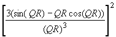

A neutron is written to the output by this module, if the neutron arrives at the sample surface after scattering. The coordinate system has still the same orientation, but the origin has moved to the center of the sample. All sample modules consider the divergence of each neutron without any approximation to obtain the true direction of the flightpath after the scattering process.
Description of the scattering:
First of all it is determined if the neutron intersects the sample. If the
neutron does not intersect the sample, it is discarded. Otherwise the neutron
is scattered along its path through the sample at a certain distance Ls
from its entrance, which is determined by a Monte Carlo choice.
The scattering is restricted to an angular range of [q-Dq, q+Dq], [f-Df, f+Df] by the input values for q, Dq,
f, Df. The direction of the trajectory i after
the sample is given by (qi, fi ). For both, coherent scattering and
incoherent scattering, both angles qi
and fi are determined by a Monte Carlo
choice in these ranges. Therefore, the number of trajectories per solid angle
in this range depends on the choice of the range. To get the real flux into
this solid angle, this has to be considered by the factors
(see below). The differential cross section is given by the square of the scattering amplitude (see e.g. Feigin, Svergun, Structure Analysis by Small-Angle X-Ray and Neutron Scattering (2.2), or P. Fratzl in 'PSI Proceedings 97-01, Cold Neutrons - High Resolution'):
ds/dW = |A(Q)|2 = |Integral(r(r) exp(iQ*r) dV)|2
Integration yields for N identical particles of volume Vp and scattering length density rp:
= N rp2 Vp2 F(Q)
with the Form Factor F(Q) = |S(Q)|2 = |Integral(exp(iQ*r)dV)/Vp|2. Considering also the scattering length density rs of the solution:
ds/dW = N(rp-rs)2 Vp2 F(Q) = (rp-rs)2 fp VpVsmpl F(Q)
where fp is the volume fraction of the particles and Vsmpl the sample volume. Now it is possible to calculate the cross section for scattering into a solid angle W. For a discrete number of orientations (qi, fi ):
scoh(W) = ds/dW (fmax-fmin)(qmax-qmin) 1/Ni S sin qi
(The meaning of Ni is explained below). Here, we get:
scoh(W) = (rp-rs)2 fp VpVsample F(Q) (fmax-fmin)(qmax-qmin) 1/Ni S sin qi
= Gcoh 4p (rp-rs)2 fp VpVsmpl F(Q) 1/NiS sin qi
The probability of scattering neutrons into this solid angle is:
Pcoh = Iout,coh / Iin = scoh(W) /Asmpl
Iin denotes the incoming neutron current, Iout,coh the current of the neutrons scattered into the solid angle W. Asmpl is the area of the sample perpendicular to the beam direction. With the preceding equation:
Li denotes the total length of the flightpath of the trajectory
under consideration through the sample. Ni is the number of trajectories
times the number of repetitions, the sum is over these Ni orientations.
(In practice, the influence of the number of trajectories on the probability
is already taken into account in the module 'Source', but the number
Nr of repetitions must be considered here.) pcoh is
the probability that a neutron is scattered at all.
The values for F(Q) can be calculated from size and shape for particles
of a simple geometry, e.g. for spheres
Fspheres(Q) =

Apart from spheres, the form factors of ellipsoids, cylinders and parallelepipeds are introduced in the program. The formula are taken from the literature mentioned above. Apart from the spheres, the orientation of the particle is relatively to the neutron flight direction is determined by a Monte Carlo choice before the treatment of the scattering event.
In addition to the coherent scattering, the incoherent scattering can be treated. This gives an isotropic distribution of the incoherently scattered neutrons. This scattering probability is given by
pinc = Iout,inc / Iin = N*sinc/ Asmpl = Vsmpl/v0*sinc/Asmpl = Li*sinc/v0 = Li*minc
sinc is the incoherent scattering cross section of the unit cell; minc= sinc/v is the macroscopic incoherent scattering cross section, which can be given as an input in the sample file.
For all trajectories, an attenuation At is considered as follows:
At = exp{-Ln * (mtot + mabs*l/(1.798 Ang))}
Ln is the total neutron flight path in the sample (surface -> point of scattering -> surface). mtot = stot/v0 denotes the total macroscopic scattering cross section to be interpreted as wavelength independent, mabs = sabs/v0 is the macroscopic absorption cross section (to be provided for l= 1.798 Ang).
For each incoming trajectory, Nr - only coherent scattering - or 2*Nr - with incoherent scattering - trajectories are generated. Summing over these trajectories, the probability for the scattering of a trajectory is then composed by:
P = S (Gcoh pcohsin qi + Ginc pinc sin qj) * At / Nr
where sin qi considers the q-dependence of the isotropic distribution of the scattering
orientations.
| Parameter Unit |
Description | Command option |
| sample file | The sample file describes the geometry and properties of the sample. | -S |
| Theta, dTheta, Phi, dPhi [deg] |
These parameters describe the solid angle covered by the detector. The
direction (q,f) points to the middle of the covered
area, which extends from [q-Dq, q+Dq] and [f-Df, f+Df]. q is defined as the angle between +x-axis (main flight direction of the neutrons) and the Vector R to be described. f is the angle between the +y-axis and the projection of R to the yz-plane. x,y and z form a right-handed system. !!!Note: If you specify any parameter of Dq, q, Df, f, you must specify all of them.!!! The default is a coverage of 4p. |
-D, -d, -P,-p |
| repetitions | 'repetitions' specifies the number of data sets (trajectories) generated for each scattered trajectory. A larger number of repetitions enriches the population on the detector and gives therefore better statistics in the spectrum. | -A |
| incoherent scattering | yes: neutrons are additionally scattered incoherently no: incoherent scattering is omitted |
-I |
Sample file parameters:
first an example (the order written to the sample file differs from the sequence chosen in the GUI):
2.0 0.0 0.0
# sample position relative to the coordinate system defined by the preceding
module is: 2 cm along the x-axis
cub
# sample has the geometry of a cuboid
0.1 1.0 1.0
# thickness, height and width of the cuboid are 0.1 x 1 x 1 cm
1.0 0.0 0.0
# orientation of the cuboid: thickness is in x-direction, height in z-direction
(vector need not be normalised)
S 500.0
# sperical particles of radius 500 Ang
10000000000.0 30000000000.0 0.03 # scattering length densities: particles
1E10 1/cm², solution 3E10 1/cm², 3 % vol. frac. of particles
0.0 0.5 0.05
# Scattering cross sections: incoherent=0, total=0.5 cm-1 and absorption=0.05
cm-1Ang-1
Anything after the # character is interpreted as a comment.
| Parameter Unit |
Description |
| x,y,z [cm] |
position of the sample centre relative to the coordinate system defined by the preceding module |
| sample geometry | cylinder or sphere or cuboid |
| thickness or radius [cm] |
thickness of cuboid, or radius of sphere, or radius of cylinder |
| height [cm] |
height of cuboid, or height of cylinder |
| width [cm] |
width of cuboid |
| x,y,z direction | vector components describing the orientation of the sample (it is not
necessary to give a normalized vector). cylinder: the vector is always perpendicular to the top of the cylinder (standard cyl. position (001), height along the z-axis). cuboid: Standard is the (1,0,0) direction, i.e. the sample has a thickness in x-direction, a width in y-direction and height in z-direction. By giving a different vector the whole sample is rotated in this direction, i.e. the planes separated by 'thickness' remain perpendicular to this vector. sphere: no values needed. |
| scattering objects | geometry of the particles in solution: spheres or ellipsoids or parallelepipeds or cylinders (or isotropically scattering objects for testing) |
| radius 1 or length radius 2 or thickness radius 3 or height [Ang] |
sizes of the particles in solution spheres: the radius of the spheres must be given in radius 1, the other parameters are not needed ellipsoids: the three radii of the ellipsoid must be given parallelepipeds: length, thickness and height of the three radii of the parallelepiped must be given cylinders: the first two parameters are radius 1 and radius 2 of the cylinder, the third is the length isotropic: no parameter needed |
| scat. len. dens. particl. [1/cm²] |
scattering length density of the particles |
| scat. len. dens. solution [1/cm²] |
scattering length density of the solution |
| vol. fraction of particles | volume fraction of the particles in solution (for 5 %: 0.05) |
| incoherent scattering, total scattering, absorption [cm-1, cm-1, cm-1Ang-1] |
macroscopic cross sections |